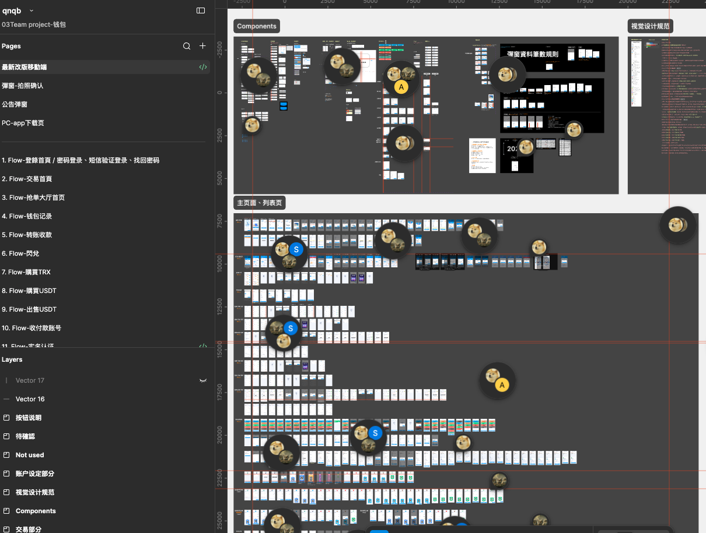
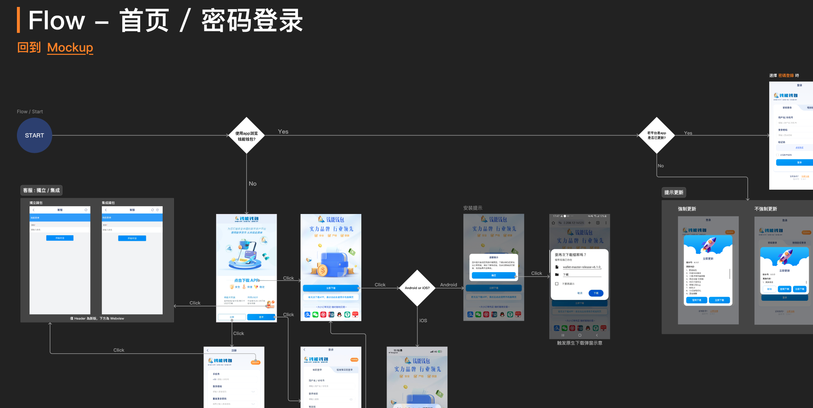
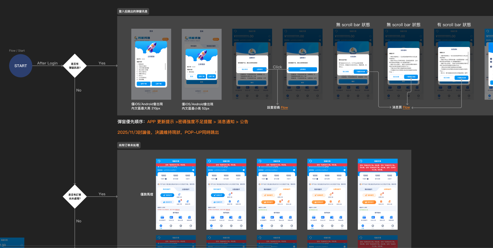
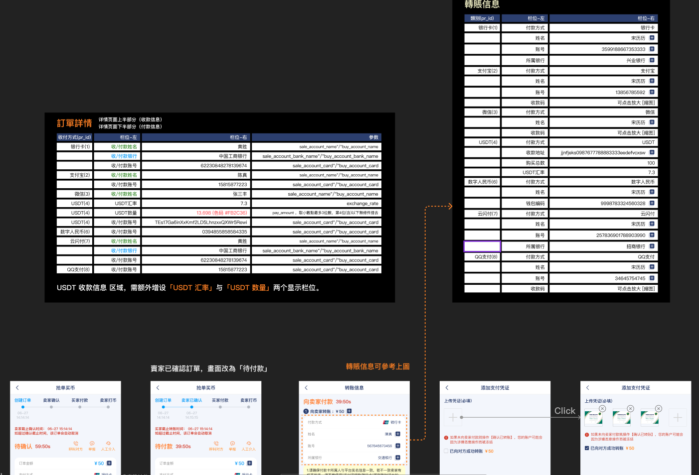
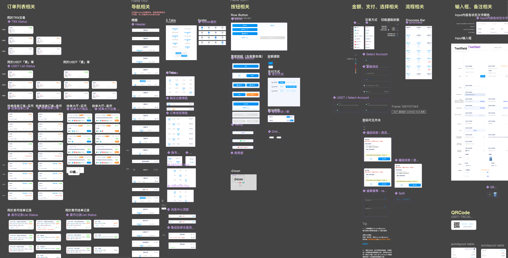
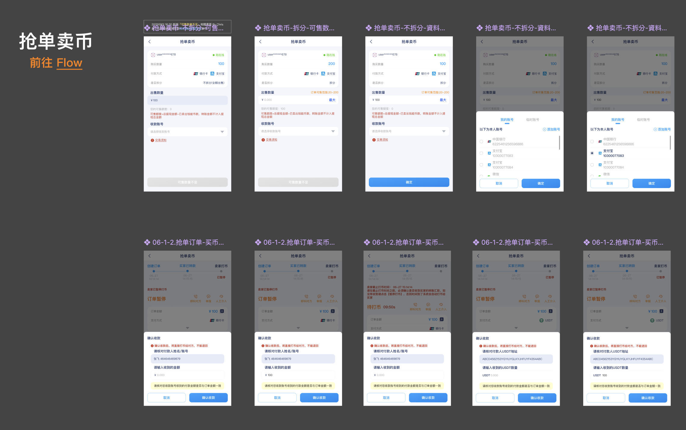

到職時，虛擬錢包產品已由資深設計前輩完成初步 UI Prototype，但尚未建立完整的 User Flow、資訊架構與設計規範。為協助 PM、RD 與 QA 以一致的產品理解進行需求討論、開發與驗證，我負責重新整理產品資訊架構，建立完整功能流程、設計文件與元件規範，作為跨部門協作的重要依據。 專案共完成 27 個核心功能 Flow，涵蓋登入驗證、交易流程、錢包管理、轉帳收款、法幣與加密貨幣交易、掛單／搶單、實名認證、支付流程及帳戶管理等核心功能。
專案共完成 27 個核心功能 Flow，涵蓋登入驗證、交易流程、錢包管理、轉帳收款、法幣與加密貨幣交易、掛單／搶單、實名認證、支付流程及帳戶管理等核心功能。

以登入流程為例，除了規劃密碼登入、簡訊驗證登入、找回密碼等基本流程外，也同步納入 App 安裝、版本更新、首次啟動及不同登入情境等分支流程，確保各種使用情境皆有明確的操作路徑與對應畫面。
再來是交易首頁，這屬於專案中較複雜的流程之一。使用者登入後，系統會依序判斷是否顯示更新提醒、密碼安全提示、系統公告、訊息通知，以及是否存在未完成訂單等狀態，再導向對應頁面，最後才進入一般交易首頁，確保不同情境皆有一致且可預期的操作流程。
而交易常見的訂單相關詳情，我也有針對不同付款方式所需顯示的欄位，整理對照表協助 PM、RD 與 QA 快速確認規格。當需求調整時，也能同步更新對照文件，降低開發誤解與溝通成本。



由於專案規模龐大，為提升設計維護效率並確保不同流程間的一致性，因此建立可重複使用的 Components 作為整體設計基礎，涵蓋列表、導航、按鈕、交易狀態、表單、Bottom Sheet、Dialog、QR Code 等常用元件。
在 Figma 檔案架構上，將內容區分為 Mockup 與 Flow 兩個主要區域。Mockup 作為畫面設計與 Main Component 的管理來源，Flow 則負責流程規劃與需求確認。
所有 Flow 畫面皆引用 Mockup 中的 Components，當元件或設計規格調整時，只需更新來源元件即可同步套用至相關流程與畫面，減少重複修改成本並維持整體設計一致性。
此外，也於各分類加入 Anchor 連結，協助 PM、RD 與 QA 在大型 Figma 檔案中快速切換 Mockup 與 Flow，提高檔案瀏覽、溝通與協作效率。


除了產品設計工作，也協助團隊建立 Figma 協作方式，分享 Components 與 Variables 的使用觀念，使設計資源能更有效率地共同維護。
後續導入 Variables 管理 Design Token，使設計稿、元件與開發規格之間保持一致，進一步提升設計維護效率與跨團隊協作品質。